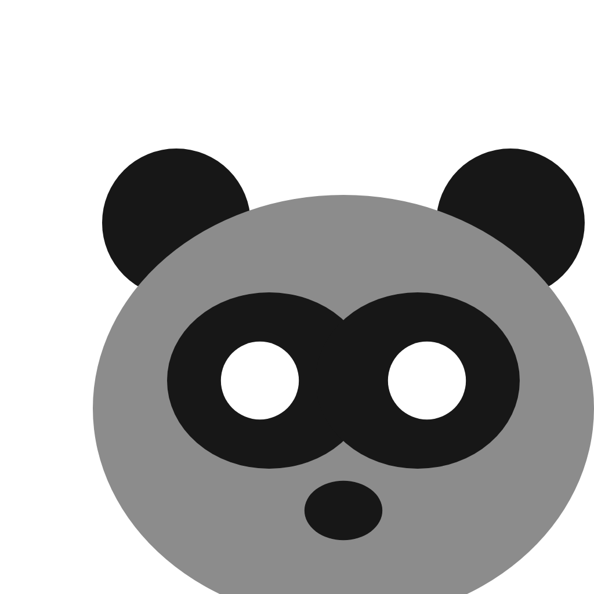
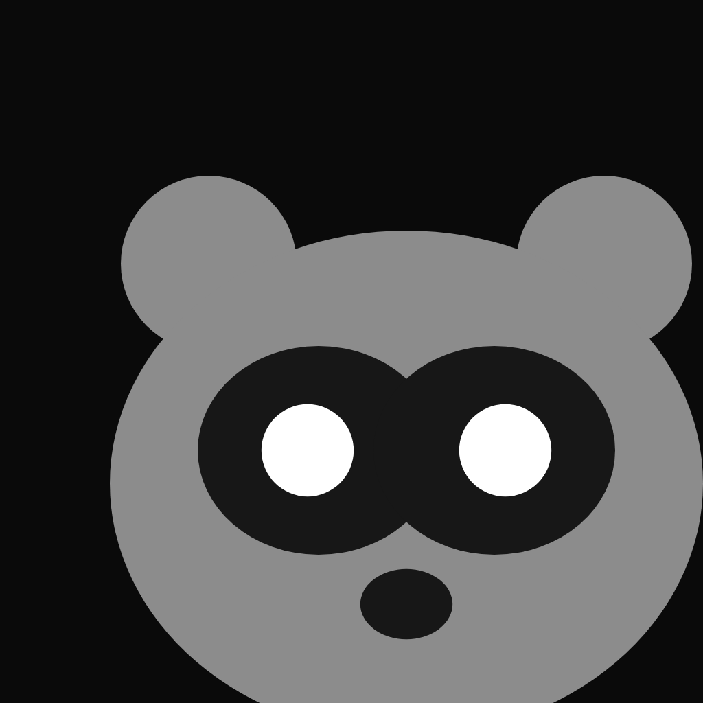
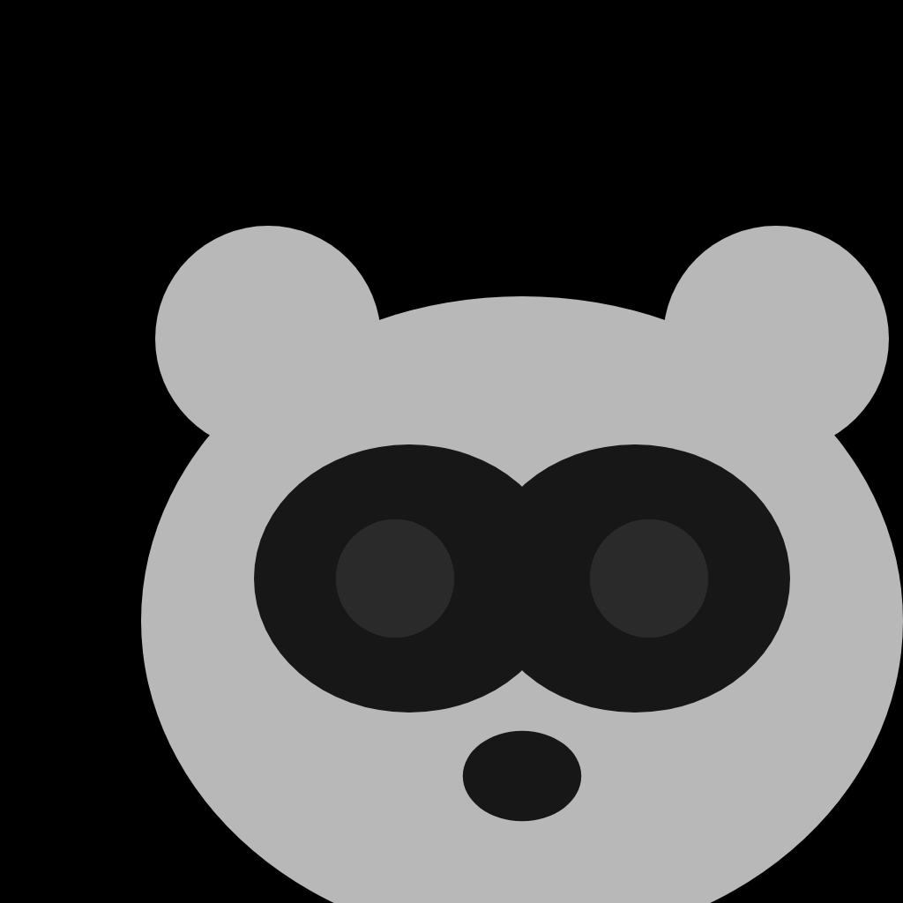
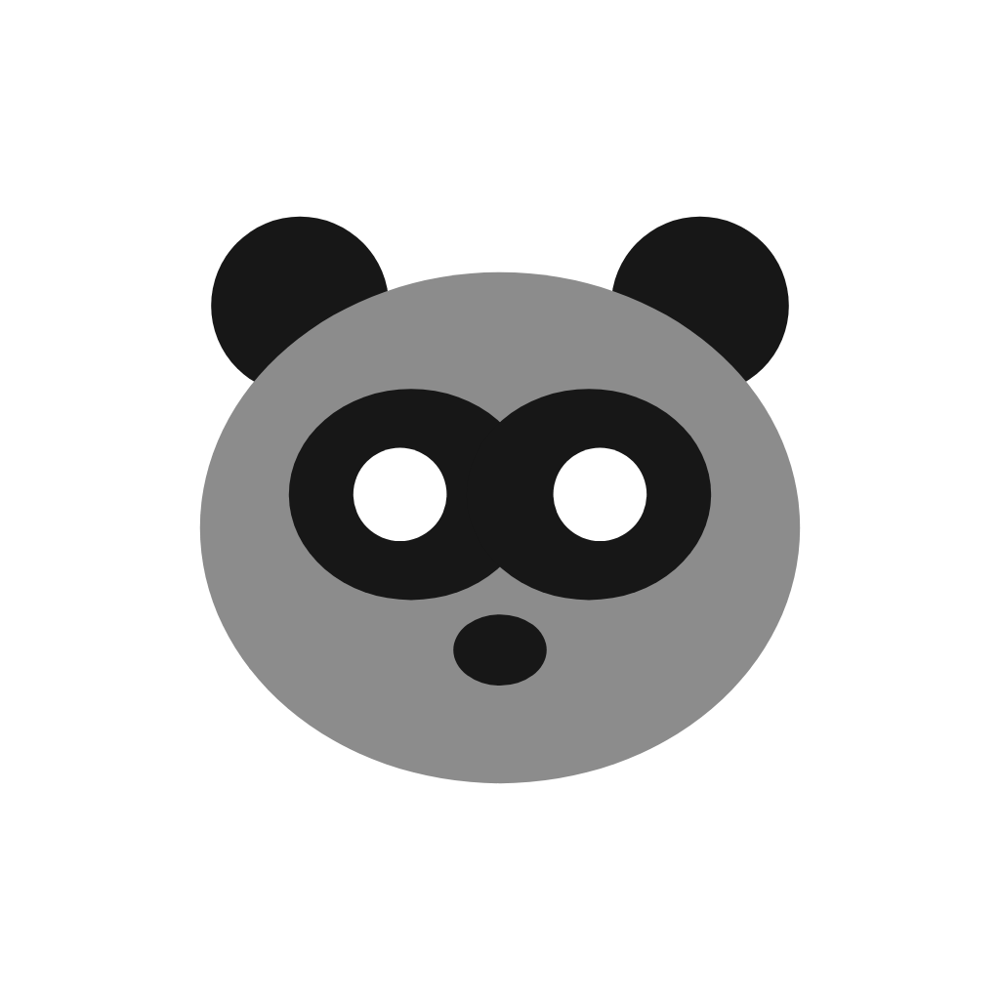

<!doctype html><meta charset="utf-8">
<style>
body{margin:0;background:#050505;color:#EDEDED;font:14px system-ui;padding:34px;
  display:flex;gap:26px;align-items:flex-end;flex-wrap:wrap}
figure{margin:0;text-align:center}
figcaption{font-size:11px;color:#8C8C8C;margin-top:8px}
.box{width:132px;height:132px;position:relative;overflow:hidden;background:#1A1A1A}
.box img{position:absolute;inset:0;width:100%;height:100%}
.circle{border-radius:50%}
.squircle{border-radius:22.37%}
.rounded{border-radius:30%}
.tint{filter:brightness(0) saturate(100%) invert(64%) sepia(28%) saturate(600%) hue-rotate(78deg)}
.sm{width:44px;height:44px}
</style>
<figure><div class="box squircle"></div><figcaption>iOS light</figcaption></figure>
<figure><div class="box squircle"></div><figcaption>iOS dark</figcaption></figure>
<figure><div class="box squircle"></div><figcaption>iOS tinted (grezzo)</figcaption></figure>
<figure><div class="box circle"></div><figcaption>Android · cerchio</figcaption></figure>
<figure><div class="box squircle"></div><figcaption>Android · squircle</figcaption></figure>
<figure><div class="box rounded" style="background:#5FBF7F"></div><figcaption>Android · themed</figcaption></figure>
<figure><div class="box squircle sm"></div><figcaption>44</figcaption></figure>
